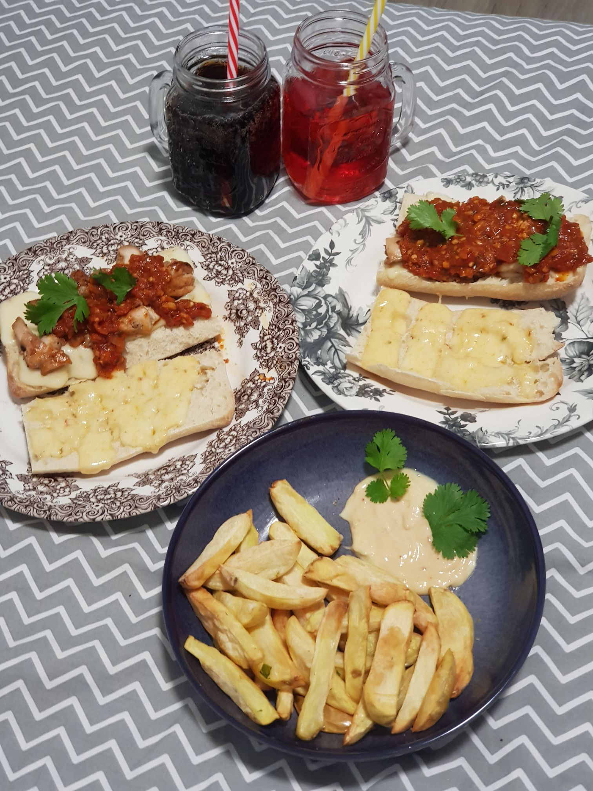

The Meatabolic Sub

Description
So this massive image is one variation of my favourite recipe the meatabolic sub.
This would be my own brain baby concoction of my favourite marinera sauce, some home made fries
chicken breast or thighs and ciabatta bread. You'll need lots of spices for This
but nothing too serious or exotic. Most of these things you will have or can get for
under about 10$ total spicewise and obviously with your choice of cheese.
Ingredients
So the ingredient list goes as follows
- Any dried peppers of your choice, crushed with seeds
- Canned chunk tomatoes, peeled
- Thyme, dried or fresh
- Basil, dried or fresh
- Cumin powder
- Fresh Chicken breast or thighs
- Salt & Pepper
- Paprika powder
- Cayenne powder
- Your preferred melty cheese
- Coriander powder
- Garlic cloves, grated or minced
- Red or white onions grated or minced
So that basically summarizes the ingredients you need, if you feel like you need measurements look at
some other websites for red sauces and chunky merineras, my philosophy with most cooking is just use
as much as you think you need then adjust the next time you make it if you over seasoned, especially with
garlic cloves and salt, those are really the only too ingredients you don't want to overdo.
Steps
The most important thing you do will be the sauce, everything else should be pretty easy so just make sure that heat isnt too high and you
consistently add more water when needed so it doesnt burn but also try to make sure the sauce stays chunky.
- First things first, rub your chicken down with some salt and pepper after slicing it into inch thick slices,
but only if they're chicken breasts since thighs are already thin.
- then crush, mince or grate your garlic and onion, saute the onions first in butter or your choice of olive olive
on medium-low heat and once the onions are aromatic add your garlic and stir occasionally till aromatic and golden
- Then while the garlic and onion are being sauteed add your desired spices or the ones mentioned above to the pan and stir
letting them fry a bit too, save basil and thyme for after adding the tomatoes.
- Next open your can of crushed tomatoes, scrape the bottom of your pan with a wooden utensil to get all the golden brown goodness off the bottom
and dump your tomatoes in.
- Let this simmer for about 25-30 minutes, optionally you can add tomato paste to the pan first and then add the whole tomatoes,
just make sure it fries first and no longer smells like raw tomato paste.
- While the sauce is simmering, observe how liquid it is and add water if too thick because it may burn, make sure there's another for it to cook.
typically letting it thicken in the last 10 minutes by no longer adding water. Also if you need to add water do so in very small amounts
- Cut your sandwich bread, I used ciabatta, in half and then cover it in your desired cheese whether sliced or shredded.
- Put the bread in the oven and let it get toasted to your desired toasted levels
- In the last 8 minutes get a pan or skillet, put some oil and crank it up to medium high heat
- Once the oil is hot, lay your seasoned chicken breasts/thighs down and press them into the skillet hard, leave it undisturbed for 3-4 minutes then flip
- After flipping press it down again then cut one piece after taking it off the pan to make sure it is fully cooked
- If it isn't cook it for another 3-4 minutes on the first side.
At this point your sauce should be done, your bread toasted and chicken ready. Assemble the sandwich in whatever fashion you like and enjoy!
Here are two more variations for this recipe that may interest you, the second one being the original.
The meatball version The meatiest version
home